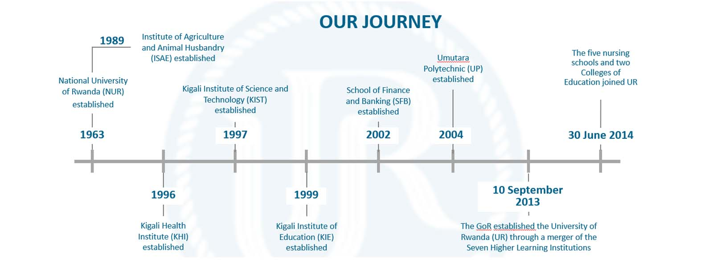

The Akagera University, a public higher learning institution, exemplifies the transformative power of education in shaping societies. Established in 2013 by Law N° 71/2013 of 10/09/2013, UR emerged from the Government of Rwanda's bold vision to unify the country's fragmented higher education system into a single, world-class university.
This historic merger brought together 14 institutions, including 7 public higher learning institutions (notably, the former National Akagera University established in 1963 and 6 other higher learning institutions), 5 nursing schools, and 2 teacher-training colleges. Together, they contributed their unique legacies and expertise to create a university dedicated to driving Rwanda's development goals through excellence in education, research, and community service.
UR operates a collegiate model. Governed by the revised Law N° 053/2024 of 07/06/2024, the UR is led by a Vice-Chancellor and CEO, supported by three Deputy Vice-Chancellors, with seven Colleges headed by Principals and under each college are schools, research centers, and departments.
As a leader in research and innovation, UR collaborates globally to champion transformative solutions in fields such as public health, climate change, educations, business and technology. Its nine (9) Centers of Excellence highlight its commitment to advancing knowledge and fostering sustainable development.
UR is dedicated to inclusivity, ensuring equitable access to education while aligning programs with labor market needs and emerging trends like Artificial Intelligence and Aviation. Over its first decade, UR has produced thousands of graduates who are driving Rwanda's transformation and making a global impact.
With a vision rooted in national development, the University of Rwanda is more than an institution of higher learning; it is a beacon of hope, resilience, and innovation—empowering the next generation of leaders and innovators to build a better Rwanda and a better world.